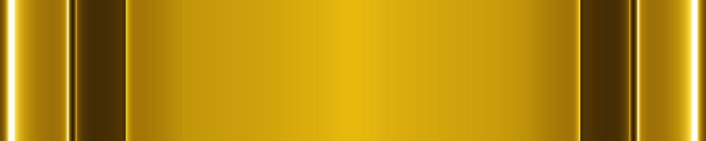
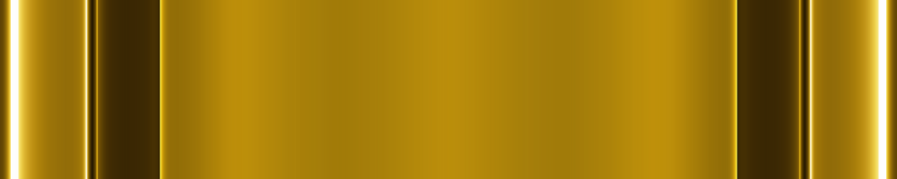
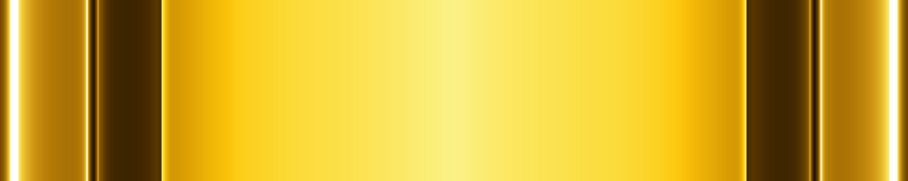
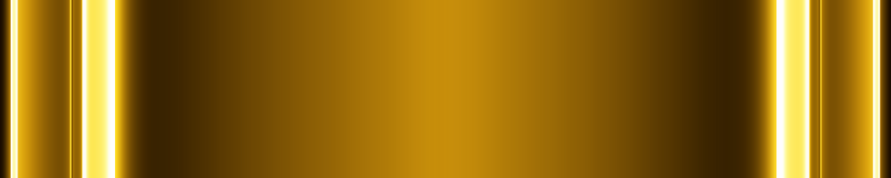
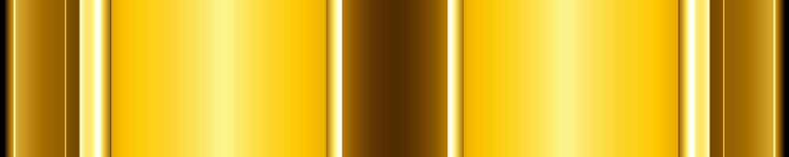

선택 확정
CLASSIC · LONG NOTE BODY / TERMINAL
아주 밝은 바디 + 고채도 포인트
싱글은 파랑, 더블은 금색.
선택한 조합과 바로 사용할 에셋을 모았습니다.
선택한 조합
바디는 가장 밝은 1단계, 포인트는 기존 고채도 원본입니다.
100:20 바디 타일을 상하로 반복하고 시작·끝 터미널에도 함께 씁니다.
선택 확정
더블 · 금색
선택 전 추천 비교 · 밝은 포인트 + 짙은 바디
추천 1 · 가장 또렷한 밝은 포인트
포인트 1 + 바디 6
아주 밝은 포인트와 가장 짙은 바디를 연결합니다.


추천 2 · 포인트에 색을 조금 더
포인트 2 + 바디 6
포인트를 한 단계 진하게 해 파랑·금색을 더 남깁니다.

선택 전 비교 기록입니다. 수치는 중앙 색면의 평균 명도 대비이며 실제 플레이 중 식별성 점수는 아닙니다.
포인트도 같은 밝기 6단계
승인된 바디의 실제 색을 기준으로 중앙 면만 바꿨습니다. 형상·테두리·발광 레일은 동일합니다.
싱글 · 파랑
아주 밝게
밝게
중간
선명하게
짙게
아주 짙게
더블 · 금색
아주 밝게
밝게
중간
선명하게
짙게
아주 짙게
전체 72개 조합 비교 · 바디 6단계 × 포인트 6단계 × 싱글·더블
행은 바디, 열은 포인트 단계입니다. 밝은 포인트를 쓰는 추천 조합에 테두리를 표시했습니다.
싱글 · 파랑 · 36개 조합
| 바디 ↓ / 포인트 → | 포인트 1 | 포인트 2 | 포인트 3 | 포인트 4 | 포인트 5 | 포인트 6 |
|---|---|---|---|---|---|---|
| 바디 1 | 1.13:1 | 1.29:1 | 1.68:1 | 1.98:1 | 3.29:1 | 6.22:1 |
| 바디 2 | 1.02:1 | 1.12:1 | 1.47:1 | 1.73:1 | 2.87:1 | 5.43:1 |
| 바디 3 | 1.33:1 | 1.17:1 | 1.12:1 | 1.32:1 | 2.19:1 | 4.14:1 |
| 바디 4 | 1.57:1 | 1.38:1 | 1.05:1 | 1.12:1 | 1.86:1 | 3.51:1 |
| 바디 5 | 2.63:1 | 2.31:1 | 1.76:1 | 1.50:1 | 1.11:1 | 2.10:1 |
| 바디 6 | 5.11:1 · 추천 | 4.48:1 · 추천 | 3.43:1 | 2.91:1 | 1.75:1 | 1.08:1 |
더블 · 금색 · 36개 조합
| 바디 ↓ / 포인트 → | 포인트 1 | 포인트 2 | 포인트 3 | 포인트 4 | 포인트 5 | 포인트 6 |
|---|---|---|---|---|---|---|
| 바디 1 | 1.13:1 | 1.19:1 | 1.28:1 | 1.41:1 | 2.13:1 | 3.36:1 |
| 바디 2 | 1.06:1 | 1.13:1 | 1.21:1 | 1.33:1 | 2.01:1 | 3.17:1 |
| 바디 3 | 1.01:1 | 1.04:1 | 1.12:1 | 1.23:1 | 1.87:1 | 2.94:1 |
| 바디 4 | 1.11:1 | 1.05:1 | 1.03:1 | 1.13:1 | 1.70:1 | 2.68:1 |
| 바디 5 | 1.69:1 | 1.60:1 | 1.48:1 | 1.35:1 | 1.12:1 | 1.77:1 |
| 바디 6 | 2.70:1 · 추천 | 2.55:1 · 추천 | 2.37:1 | 2.16:1 | 1.43:1 | 1.10:1 |
같은 형태 · 같은 고유색 · 밝기 6단계
왼쪽부터 밝게 → 짙게. 각 단계에서 원본·고채도 포인트와의 연결을 확인합니다.
싱글 · 파랑
아주 밝게
밝게
중간
선명하게
짙게
아주 짙게
더블 · 금색
아주 밝게
밝게
중간
선명하게
짙게

아주 짙게

유지할 포인트 · 원본 / 고채도
중앙 분할을 제거한 형상입니다. 밝은 원본과 색이 선명한 고채도 두 종류를 비교합니다.
| 버전 | 싱글 | 더블 |
|---|---|---|
| 원본 | PNG | PNG |
| 고채도 | PNG | PNG |


이전 형태별 시안 보기
고유색 바디 6쌍 · 싱글 / 더블
위쪽은 바디 단독, 아래쪽은 같은 유형의 원본·고채도 포인트 연결입니다. 바디만 보아도 파랑과 금색이 구분됩니다.
밝은 유리 면
밝은 고유색 중심면과 짙은 색 홈을 대비시킵니다.

짙은 유리 면
짙은 고유색 바탕 위에 밝은 레일을 올립니다.

밝은 중앙 띠
밝은 중앙 띠 양옆에 넓은 고유색 면을 둡니다.
밝은 양쪽 면
밝은 고유색 패널 두 개와 어두운 중앙 홈을 조합합니다.

선명한 색 유리
중간 밝기의 고유색 면과 가는 흰 레일을 대비시킵니다.
넓은 색 레일
어두운 중심면 양옆에 넓고 밝은 고유색 레일을 둡니다.
이전 바디 시안 보기
흰 면 · 어두운 프레임
1+2 조합의 넓은 중심면과 양쪽 레일을 유지하고 명도 차이를 키웠습니다.
싱글 · 차가운 흰색과 짙은 청회색
바디 5회 반복 + 고채도 파란 포인트
더블 · 따뜻한 흰색과 짙은 회갈색
바디 5회 반복 + 고채도 금색 포인트
이전 색상 · 파랑과 금색
밝고 어두운 대비를 높이기 전의 바디·터미널 공용 타일입니다.
싱글 · 사파이어와 청록색 레일
아래는 바디 5회 반복과 최신 싱글 포인트의 연결입니다.
더블 · 샴페인 골드와 크림색 레일
아래는 바디 5회 반복과 최신 더블 포인트의 연결입니다.
기존 6개 시안
유리 리본
넓은 푸른 유리 면과 가느다란 은색 외곽.
이중 레일
어두운 중앙을 사이에 둔 두 개의 밝은 레일.
은색 중심축
은색 중심축과 깊은 푸른색의 양쪽 면.
사선 연결
V자 절삭면이 연속해서 이어지는 구조.
교차 패널
엇갈린 금속 패널과 작은 모서리 반사.
유선형 흐름
두 개의 푸른 곡선이 흘러가는 유리 표면.
모든 타일은 100:20 비율입니다. 01–03은 곧게 이어지는 면, 04–06은 주기적으로 반복되는 무늬입니다.